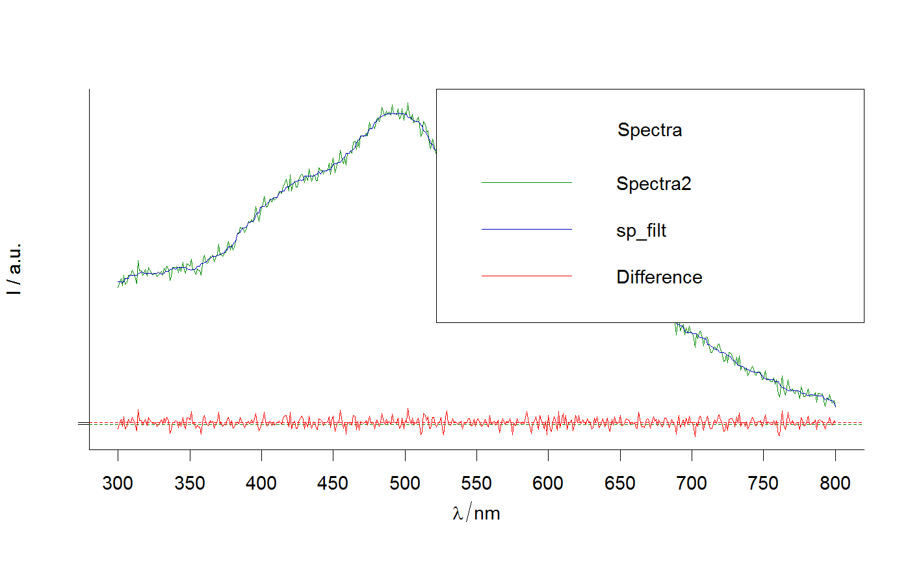
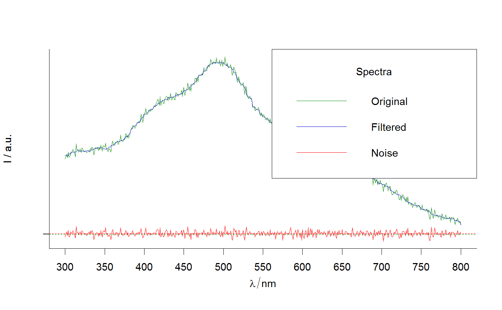

Compare 2 spectroscopic signals: plot 2 signals and their difference.
plot_spCompare(sp1, sp2, row = 1, colors = c("green4", "blue3", "red"), show.legend = TRUE, legend.title = "Spectra", legend.text = c(match.call()$sp1, match.call()$sp2, "Difference"), x = "topright", lwd = 1, ...)
| sp1, sp2 | hyperSpec objects of the same size |
|---|---|
| row | An integer, that indicates which row must be plotted. |
| colors | Vector of 3 colors for original, filtered and noise signals respectively. |
| show.legend | Logical |
| legend.title | The title of the legend. |
| legend.text | Character vertor of length = 3. The entries for the legend for for original, filtered and noise signals respectively. |
| x, y | the x and y co-ordinates to be used to position the legend.
They can be specified by keyword or in any way which is accepted
by xy.coords: See 'Details' in |
| lwd | A line width. More details in par. |
| ... | Other arguments to be passed to |
A plot made with R package graphics.
Other spHelper plots: check_palette,
layer_spRangeMean,
plot_colors, plot_hyPalette,
plot_spDiff,
plot_spDistribution,
qplot_confusion,
qplot_crosstab,
qplot_infoDim, qplot_kAmp,
qplot_kSp, qplot_prediction,
qplot_spRangeCenter,
qplot_spStat, qplot_spc,
rmExpr, rm_stripes,
stat_chull
# Apply running medians filter: sp_filt <- apply(Spectra2, 1, function(x) {runmed(x, 15)}) plot_spCompare(Spectra2, sp_filt, row = 2)# Modify the legend: plot_spCompare(Spectra2, sp_filt, row = 2,legend.text = c("Original","Filtered","Noise"))